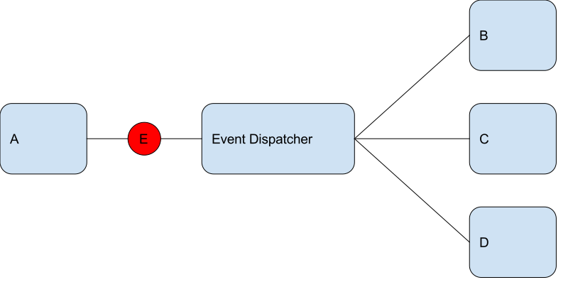

Drupal 8 and the Symfony Event Dispatcher
Eric Smith / @ericgsmith / @cameronwilding
http://ericgsmith.github.io/eventdispatcher
Me
- Drupal Developer at
Agenda
- Background
- What is it & why it's useful
- Creating / dispatching an event
- Responding to an event
Hooks
Info Hooks
- hook_block_info
- hook_field_info
- hook_filter_info
Hooks
- hook_node_save
- hook_help
- hook_preprocess_...
Invoked hooks
- hook_boot
- hook_init
- hook_exit
Events
... an event is an action or occurrence recognised by software that may be handled by the software.
Events
Something happened
Event Dispatcher
The EventDispatcher component provides tools that allow your application components to communicate with each other by dispatching events and listening to them.
Symfony Event Dispatcher

Symfony Event Dispatcher

Symfony Event Dispatcher
Symfony Event Dispatcher

Use case
We have a form that collects a name and email address.
- Send an email to the user
- Log the submission
- Add the user to our CRM
- Add the user to our newsletter
- Tweet their details to the company fridge
In a world without mediators
public function submitForm(array &$form, FormStateInterface $form_state) {
$name = $form_state->getValue('name');
$email = $form_state->getValue('email');
$this->mailer->mail('example', 'signup_form', $email, .... ['name' => $name]);
$this->logger->log('notice', 'Registration of interest submitted...');
$this->crmManager->subscribe($name, $email);
$this->mailChimpSubscriptionManager->add($name, $email);
$tweet = TweetFactory::create('blah blah ' . $name . ' blah blah');
$this->tweeter->tweet($tweet);
}
Problems
- Submit method is doing too many things
- Form class knows too many things
- Hard to maintain
- Hard to reuse

Detour: Service container
Service:
Any PHP object that performs some sort of "global" task.
http://symfony.com/doc/current/book/service_container.html
Dependency Injection:
Inject dependencies.
Not Dependency Injection:
public function myMethod() {
$mailer = new Mailhandler();
$mailer->send('This is bad.');
}
Dependency Injection:
protected $mailer;
public function __construct(MailHandlerInterface $mailer) {
$this->mailer = $mailer;
}
public function myMethod() {
$this->mailer->send('This is better.');
}
Step 1: Configuration
Step 2: Magic

Step 3: Service Container

Dispatching an event
- Static event class
- Extend the event class
- Dispatch the event
The Static Events Class
final class ExampleModuleEvents {
/** docBlock */
const SIGNUP_FORM_SUBMIT = 'module_name.signup_form_submit';
}
Extend the event class
use Symfony\Component\EventDispatcher\Event;
class SignupFormEvent extends Event {
protected $submittedName;
protected $submittedEmail;
public function __construct($name, $email) {
$this->submittedName = $name;
$this->submittedEmail = $email;
}
public function getSubmittedName() {
return $this->submittedName;
}
public function getSubmittedEmail() { return
$this->submittedEmail;
}
}
Dispatch the event
public function submitForm(array &$form, FormStateInterface $form_state) {
$name = $form_state->getValue('name');
$email = $form_state->getValue('email');
$event = new SignupFormEvent($name, $email);
$this->eventDispatcher->dispatch(ExampleModuleEvents::SIGNUP_FORM_SUBMIT, $event);
}
Detour: Forms
FormBase
- Implements FormInterface
- Implements ContainerInjectionInterface
ContainerInjectionInterface
public static function create(ContainerInterface $container) {
return new static();
}
ContainerInjectionInterface
protected $eventDispatcher;
public function __construct(EventDispatcherInterface $eventDispatcher) {
$this->eventDispatcher = $eventDispatcher;
}
public static function create(ContainerInterface $container) {
return new static($container->get('event_dispatcher'));
}
FormInterface
public function buildForm(array $form, FormStateInterface $form_state);
public function validateForm(array &$form, FormStateInterface $form_state);
public function submitForm(array &$form, FormStateInterface $form_state);
Listen for events
- Implement EventSubscriberInterface
- Implement getSubscribers method
- Add to services.yaml
Implement EventSubscriberInterface
use Symfony\Component\EventDispatcher\EventSubscriberInterface;
class RegistrationMailer implements EventSubscriberInterface {
protected $mailManager;
protected $languageManager;
public function __construct(MailManagerInterface $mailManager, LanguageManagerInterface $languageManager) {
$this->mailManager = $mailManager;
$this->languageManager = $languageManager;
};
public static function getSubscribedEvents() {
$events[ExampleModuleEvents::SIGNUP_FORM_SUBMIT][] = array('onRegister', 0);
return $events;
}
public function onRegister(SignupFormEvent $event) { ... }
}
public function onRegister($event) {
$module = 'event_demo';
$key = 'register_interest';
$to = $event->getSubmittedEmail();
$params = ['name' => $event->getSubmittedName()];
$language = $this->languageManager->getDefaultLanguage();
$this->mailManager->mail($module, $key, $to, $language, $params);
}
services.yaml
services:
example_module.registration_mailer:
class: "Drupal\example_crm_module\EventSubscriber\RegistrationMailer"
arguments: ["@plugin.manager.mail", "@language_manager"]
tags:
- { name: event_subscriber }

Why is this good?
- Single Responsibility Principle
- Open / Closed
- Decoupled Modular Code
- Testable
Why is this better than hooks?
- Control
- External Components
Stopping an event
$event->stopPropagation()
What is Core doing...
- ConfigEvents::DELETE, IMPORT, SAVE..
- EntityTypeEvents::CREATE, UPDATE, DELETE..
- KernelEvents::REQUEST, RESPONSE, TERMINATE..
- RoutingEvents::ALTER, DYNAMIC, ETC..
Kernel Events
- kernel.request
- kernel.controller
- kernel.view
- kernel.response
- kernel.exception
- kernel.terminate
kernel.exception
This event allows you to create a response for a thrown exception or to modify the thrown exception. The event listener method receives a ...\GetResponseForExceptionEvent instance.
Fast 404 listener
Fast 404 listener
$request = $event->getRequest();
$config = $this->configFactory->get('system.performance');
$exclude_paths = $config->get('fast_404.exclude_paths');
if ($config->get('fast_404.enabled') && $exclude_paths && !preg_match($exclude_paths, $request->getPathInfo())) {
$fast_paths = $config->get('fast_404.paths');
if ($fast_paths && preg_match($fast_paths, $request->getPathInfo())) {
$fast_404_html = strtr($config->get('fast_404.html'), ['@path' => Html::escape($request->getUri())]);
$response = new Response($fast_404_html, Response::HTTP_NOT_FOUND);
$event->setResponse($response);
}
}
}
The Future
- Pre / Post events for all the things... Maybe?
Rules module
- Works with events
- Adds events for many core hooks
/**
* Implements hook_user_login().
*/
function rules_user_login($account) {
// Set the account twice on the event: as the main subject but also in the
// list of arguments.
$event = new UserLoginEvent($account);
$event_dispatcher = \Drupal::service('event_dispatcher');
$event_dispatcher->dispatch(UserLoginEvent::EVENT_NAME, $event);
}
Questions?
Eric Smith / @ericgsmith / @cameronwilding